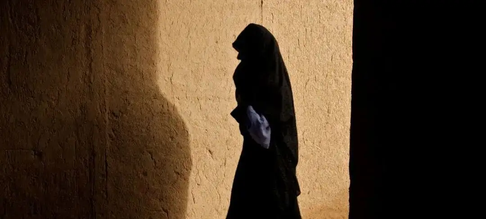

引言：
八月，高温频发，全球多地的生灵置身烈日的炙烤中，而女性的处境也同样如此，不容乐观。在印度，年轻的女医生在工作场所被残忍地杀害，引起全国范围内医生的罢工与民众的愤怒。在韩国，用深度伪造技术（Deepfake）制成的色情作品使无数女性陷入恐惧之中，传播速度快、匿名性强的特点使得如何及时监管成为难题。而在阿富汗，塔利班掌权的三年以来，女性权益严重受损，基本权利被剥夺殆尽，女性彻底失权。与此同时，针对亚裔的暴力也未曾停止，无论是家庭内部还是外部，亚裔女性的安全都仍需得到更好的保障。在美国亚利桑那州，华裔教授David Zhu枪杀妻子致死，夫妻间长期存在的家庭暴力问题或为其原因；在加拿大多伦多，知名房地产经纪人遭到杀害、遗体被焚烧。在这个月，对于女性而言，全球同此凉热，忧虑、恐惧、失望、困顿，成为全球女性共同分享的心情。但仍有些人仍未放弃，在忧虑和恐惧中重整旗鼓，在失望中奋进，在困顿中前行，为女性的权益不懈地呐喊和抗争着。
目录
Table of Contents
一、性别平等
News on Gender Equality
印度31岁女医生在医院遭遇性侵并被残忍杀害，引发公众愤怒和广泛抗议
韩国深度伪造技术（Deepfake）色情犯罪激增，网络性暴力引起恐慌
塔利班接管国家权力三年：阿富汗女性权利严重受损
二、针对亚裔的暴力
Crimes against Asian Community
亚利桑那州立大学华裔教授David Zhu枪杀妻子致死被捕
加拿大华人女子失踪遇害，警方锁定47岁男子为谋杀案嫌疑人，或已逃出国
三、亚裔话语权
Voice of Asian
旧金山市长选举：“拉拢”华裔选民成关键
柬埔寨首相欢迎纽约大都会博物馆和其它收藏机构归还文物
01
性别平等
News
印度31岁女医生在医院遭遇性侵并被残忍杀害，引发公众愤怒和广泛抗议
2024年8月，印度西孟加拉邦加尔各答的一位31岁女医生在工作地点遭到性侵并被谋杀。她的遗体在她工作的RG Kar医学院被发现，事发时，她正处于一个36小时夜班的休息间隙，尸检报告显示她身上有多处伤痕，且遭受了严重的性暴力。
这一事件引发了全国范围内的愤怒与抗议，医生和公众共同呼吁加强医疗场所的安全保障。抗议活动由医生团体领导，许多医院终止了除急诊外的所有服务，要求政府采取措施保障医务工作者的安全。TA们呼吁制定专门法律，以防止类似暴力事件的再次发生。印度总理莫迪在国庆日演讲中也对这起案件表示关注，强调必须解决对女性的暴行。
此案不仅引发了公众的愤怒，还揭示了印度医疗系统中的安全隐患。医疗专业人员轮班时的人身安全得不到有效保障，轮班工作时也没有安全的休息场所，同时还需面对来自同行和病人的性骚扰。西孟加拉邦的23所医学院联合声明表示，这不仅是医生的运动，更是为所有女性争取工作场所安全的斗争。与此同时，法院也介入调查，批评地方政府和警方处理不当，并责令中央调查局（CBI）接手案件，以确保公正调查。
尽管印度在2012年德里公交性侵案后加强了针对性暴力的法律，但针对女性的暴力行为仍未能得到有效遏制。2022年，印度的女性犯罪率较上一年增长了4%，显示了此类事件的严峻性。
消息来源：
Kumar, R. (2024, August 26). The rape and murder of a female doctor in India sets off an outcry over women’s safety. NPR.
https://www.npr.org/sections/goats-and-soda/2024/08/26/g-s1-18366/rape-murder-doctor-india-sexual-violence-protests
News
韩国深度伪造技术（Deepfake）色情犯罪激增，网络性暴力引起恐慌
8月，韩国新闻媒体曝光了Telegram上流传着大量深度伪造的色情内容，在付费频道内，男性用户上传女性照片，付费将其制成色情图片和视频，而这些照片里几乎都是年轻女性，其中包括未成年女孩。这些色情作品在Telegram的匿名聊天室内大量传播，有些聊天室的成员多达22万。
今年1月至7月，韩国警方共通报了297起涉及深度伪造的性犯罪案，而在首次收集此类数据的2021年，全年只通报了156起这种案件。有关深度伪造内容今年激增的新闻报道已在年轻女性中引起恐慌，许多人已经开始删除社交媒体上的自拍照和其TA个人图片，担心这些图片会被人用去制作深度伪造内容。
尽管在2020年，韩国国会颁布了一项法律来禁止制作、传播这类内容，用户常常绕过政府审查、在匿名平台上传播这些色情内容，传播速度极快而警方的调查却常常滞后。调查人员进行这类调查要收到未成年人遭到性虐待的举报，进入深度伪造聊天室需要获得法院批准。这一切都为这种形式的性暴力增添了隐蔽而危险的维度。
消息来源：
韩国深伪色情犯罪激增，厌女文化助长网络性暴力. (2024, Sept 13). 纽约时报中文网.
https://cn.nytimes.com/asia-pacific/20240913/south-korea-deepfake-videos/?utm_source=top10-in-article&utm_medium=articlepage&utm_campaign=web
News
塔利班接管国家权力三年：阿富汗女性权利严重受损
8月13日，联合国妇女署阿富汗国家代表戴维安在新闻发布会上表示，在塔利班接管阿富汗权力的三年来，阿富汗女性的基本权力被剥夺、自主权被摧毁。
同日，妇女署发布了一份报告，这份报告通过自2021年8月以来与成千上万的阿富汗女性进行的多轮咨询所得，展示了阿富汗女性权利的变化趋势。报告显示，阿富汗的女性正在严重地失权。在家庭中，过去一年里感到自己能够影响家庭决策的女性比例下降了近60%。在社区层面，在被调查的妇女中，98%的人认为她们对所在社区的决策影响有限或为零。此外，阿富汗的女性还面临着严重的心理健康危机。68%的女性报告称其心理健康状况“差”或“非常差”，8%的女性表示认识至少一位曾尝试自杀的女性。
过去三年里，妇女署对阿富汗女性的投资主要包括三大战略：为基层女性组织分配灵活且长期的资金、设计专门针对消除对妇女和女孩歧视的方案、为阿富汗妇女直接表达其关切和优先事项创造空间。戴维安表示，妇女署还将持续进行此类投资，以面对这场日益加深的妇女权利危机。

消息来源：
UN. (2024, Aug 13). 塔利班接管国家权力三年：阿富汗女性权利严重受损. 联合国新闻. https://news.un.org/zh/story/2024/08/1130631
02
针对亚裔的暴力
News
亚利桑那州立大学华裔教授David Zhu枪杀妻子致死被捕
亚利桑那州立大学华裔教授David Zhu（朱洪泉）因涉嫌枪杀妻子Susan Yijuan Yan被警方逮捕。事件发生在斯科茨代尔市一处住宅，警方接到报告后，于现场发现Yan身中枪伤，虽被紧急送往医院，仍因伤重不治。朱洪泉被控一级谋杀。
警方指出，Zhu在枪击事件发生后立即自首，并拨打911报警，称自己开枪射杀了妻子。事发时，这对夫妇的19岁女儿和14岁儿子也在家中，但并未受伤。警方到达现场时，发现Yan倒在主卧室外的走廊上，并在卧室内发现一把猎枪及两枚用过的子弹。此外，警方还在卧室内找到了另一把手枪，并在衣柜中发现了一支步枪。
法庭文件显示，Zhu告诉警方，他原本打算朝墙壁开枪，而非对准妻子。但调查人员在检查现场时，发现Yan背部有两处霰弹枪伤痕迹，这与Zhu的供述相矛盾。警方怀疑Zhu故意对妻子开枪，导致其死亡。
据悉，这对夫妻之间长期存在家庭暴力问题。子女在事发后向警方透露，父母多年来曾有过几次激烈争吵和冲突。枪击事件发生前，两人曾大声争吵，这可能是引发悲剧的直接原因。
Zhu是亚利桑那州立大学凯瑞商学院管理与创业系的教授，自2009年以来一直在该校任教，并担任中国DBA项目主任。该校发表声明，对受此悲剧影响的所有人表示惋惜，但未透露更多细节。目前案件正在进一步调查中。
消息来源：
亞利桑那州大華裔教授David Zhu槍殺妻子致死遭捕. (2024, Aug 18).
https://lvcnn.com/vegaschinese/news.php?id=48076
News
加拿大华人女子失踪遇害，警方锁定47岁男子为谋杀案嫌疑人，或已逃出国
加拿大多伦多地区知名房地产经纪人、56岁的梅育英（Yuk-Ying Anita Mui）于8月9日离家后失踪。家属报案后，此案受到当地华人社区的广泛关注。
8月12日，警方在其失踪地北部200公里处发现一具烧焦的遗体，经确认遗体为梅女士。3名16至17岁的嫌疑人被警方以持有武器、欺诈等罪名提控，但指控未涉及谋杀。
8月28日，警方锁定47岁男子胡志雄（音）为谋杀嫌疑人，并向加拿大全境发布了一级谋杀的逮捕令。胡志雄可能已离开加拿大，警方正与边境服务局合作追捕。据悉，胡志雄的登记地址为加拿大万锦市境内的一栋大楼内，楼内一名男子表示，胡志雄是住宅建筑和装修行业的总承包商。目前，警方尚未公布嫌疑人与梅女士的关系及作案动机。
消息来源：
加拿大华人女子失踪遇害,警方锁定47岁男子为谋杀案嫌疑人,或已逃出国. (2024, Aug 29).
https://mp.weixin.qq.com/s/HjylqdYZptVrEcILGySnGA
03
亚裔话语权
News
旧金山市长选举：“拉拢”华裔选民
成关键
11月，旧金山将迎来新一届市长选举，候选人纷纷拉拢华裔选民，重视华人社群的影响力。在旧金山，华裔人口占当地居民的五分之一以上，华裔选民被认为有左右选举结果的力量。在2022年震撼全市的两次罢免选举中，华裔被认为是推动因素之一。
目前的竞选者中没有重要的华裔竞争者，但各参选人已经开始争相接触华裔选民。TA们正在通过中国的社交平台如微信接触选民，一些人还招募了曾在罢免选举中发挥重要作用的华人领袖，让TA们在今年的竞选中担任重要角色。一些人甚至为选票和竞选标志上应该如何列出自己的中文名字争论不休。
例如，竞选者法雷尔誓言要更加严厉地打击旧金山的犯罪、芬太尼泛滥和无家可归者问题。旧金山市现任市长布里德最近访问了中国，她目前在竞选中寻求连任。她在访问中曾呼吁恢复中国直飞旧金山国际机场的航班，还承诺将大熊猫带到旧金山动物园。但许多受访的华裔选民表示，现状仍需改变，市领导人仍需要做得更多，来保障社区的安全。
消息来源：
旧金山市长选举:“拉拢”华裔选民成关键. (2024, August 14). 纽约时报中文网. https://cn.nytimes.com/usa/20240814/san-francisco-mayor-chinese-voters/dual/
News
柬埔寨首相欢迎纽约大都会博物馆和其它收藏机构归还文物
柬埔寨首相亨·马内特（Hun Manet）于周四主持了庆祝活动，欢迎从海外博物馆和私人收藏家处归还的70件珍贵文物，并表示政府将继续努力将更多文物带回国，文物展览在国家政府所在地和平宫举行。
根据文化与美术部的声明，这70件柬埔寨文化物品通过自愿归还、谈判、扣押和法律程序等多种方式归还，来源于林德曼家庭、吉姆·克拉克、纽约大都会艺术博物馆及其TA美国私人收藏家。归还的文物包括9至14世纪吴哥时期的重要印度教和佛教杰作，特别是一些珍贵的石雕像，如来自印度史诗《摩诃婆罗多》的神话战士雕像、湿婆和帕尔瓦蒂的雕像，以及古都高克的阿尔达纳里什瓦拉雕像。
许多文物是在柬埔寨经历长时间内战和红色高棉政权统治期间被掠夺的。这些文物中，有部分是著名艺术经销商道格拉斯·拉奇福德（Douglas Latchford）购买和贩卖的。拉奇福德在2019年因涉嫌组织出售被盗柬埔寨古董而被起诉，但于次年去世，他否认参与走私。
美国驻柬埔寨大使馆表示，已促成超过150件古董的归还，包括以前归还的印度教象神甘尼什雕像和10世纪的“孔雀上的斯卡达”雕像。这一归还行动被视为保护柬埔寨文化遗产的正确做法。虽然柬美关系因人权问题受到影响，但两国在文化保护方面依然合作。
消息来源：
Cambodia’s prime minister welcomes artifacts returned by New York’s Met and other collections. Northwest Asian Weekly. https://nwasianweekly.com/2024/08/cambodias-prime-minister-welcomes-artifacts-returned-by-new-yorks-met-and-other-collections/
* 注：本文所收录的信息仅用于分享交流，不代表Avoice的立场和观点
内容来源｜学术研究处
封面/排版｜王佳怡